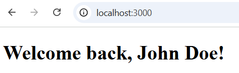

Integrating EJS with Express for Rendering Templates
Overview
EJS (Embedded JavaScript) is a templating engine that allows dynamic content rendering in Express applications. This documentation provides step-by-step instructions on setting up EJS and Express. It covers configuring Express, setting the view engine, and rendering templates from routes.
Installing EJS and Express
1. Install Express and EJS as dependencies:
Install Express:
This will add Express to your node_modules folder and update your package.json file with Express as a dependency.
Install EJS:
This will install EJS as a templating engine for your Express app, enabling the dynamic rendering of HTML templates.
Tip
Don't forget to run npm init --y to initialize a new package.json, and run npm install to install dependencies in your Node.js project.
2. Verify the Installations:
After installation, you can see that both dependencies have been added to your package.json file. Your dependencies section should look like this:
This ensures that both Express and EJS are correctly installed in your project.
Configuring Express to Use EJS
Before rendering templates, Express must be configured to recognize EJS as the templating engine.
1. Import Express:
Create your application file (e.g., app.js), and require the Express module in it.
2. Initialize the Express App
Create an instance of an Express application.
3. Set EJS as the View Engine
First, create the views folder inside your directory
Configure Express to use EJS for rendering templates.
Info
The default directory for views is ./views. If templates are in a different location, update path accordingly.
Rendering an EJS Template from an Express Route
Once EJS is configured, Express routes must be set up to render templates dynamically.
1. Create an Express Route
Define a route that will render an EJS template.
When you pass data to the EJS template using res.render(), the data is sent as an object. In this case, we are passing one property: name. This property becomes available in the EJS template, where we can dynamically insert it into the HTML. Here, the name property can be used to personalize the message.
This process allows you to inject dynamic, context-specific information into your views directly from your Express route handlers.
2. Create the Template File
Inside the views directory, create index.ejs.
This will render the "Welcome back, John Doe!" message.
3. Start the Express Server
Run the server to test the template rendering.
In your console, run the command:
4. Verify in Browser
Open http://localhost:3000 in a browser to check if the template renders correctly.

Conclusion
With this configuration, Express successfully renders EJS templates from routes, allowing dynamic page content to be served.